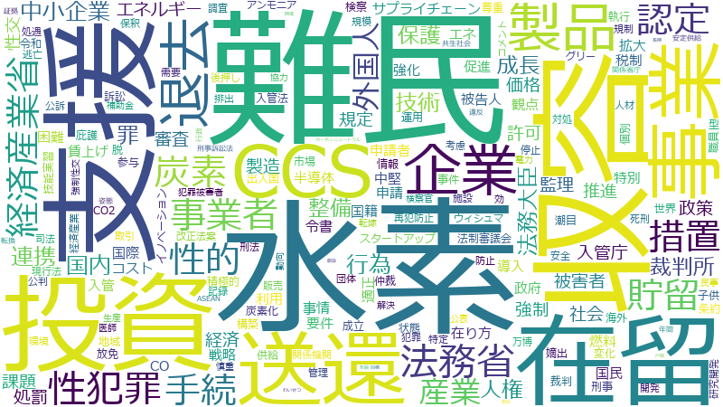

齋藤健

原子力経済被害担当
ＧＸ実行推進担当
産業競争力担当
ロシア経済分野協力担当
内閣府特命担当大臣（原子力損害賠償・廃炉等支援機構）[現職]
支援 、事業 、企業 、投資 、水素 、難民 、措置 、連携 、事業者 、手続 、認定 、整備 、課題 、技術 、産業 、国内 、収容 、製品 、政策 、社会 、経済 、経済産業省 、推進 、法務省 、行為 、観点 、在留 、保護 、政府 、規定 、中小企業 、強化 、成長 、外国人 、炭素 、エネルギー 、拡大 、価格 、国民 、困難 、審査 、在り方 、利用 、送還 、地域 、人権 、CCS 、性犯罪 、導入 、情報 、罪 、退去 、促進 、適正 、性的 、許可 、事情 、国際 、法務大臣 、裁判所 、令和 、運用 、貯留 、調査 、要件 、世界 、戦略 、海外 、状態 、被害者 、製造 、変化 、特別 、コスト 、強制 、申請 、積極的 、個別 、団体 、構築 、規模 、環境 、安全 、賃上げ 、職員 、型 、子供 、管理 、サプライチェーン 、成立 、税制 、執行 、市場 、施設 、開発 、協力 、特定 、処罰 、供給 、年間
水素 、難民 、収容 、支援 、投資 、在留 、送還 、事業 、CCS 、企業 、製品 、退去 、性犯罪 、法務省 、認定 、事業者 、貯留 、炭素 、措置 、性的 、手続 、経済産業省 、産業 、外国人 、中小企業 、法務大臣 、連携 、国内 、技術 、罪 、行為 、人権 、成長 、整備 、裁判所 、保護 、エネルギー 、経済 、監理 、課題 、強制 、政策 、価格 、社会 、処罰 、審査 、推進 、許可 、規定 、入管庁 、被害者 、性交 、製造 、サプライチェーン 、観点 、被告人 、拡大 、強化 、賃上げ 、政府 、中堅 、適正 、税制 、困難 、事情 、入管 、在り方 、申請者 、国籍 、エネ 、要件 、令書 、国民 、国際 、導入 、半導体 、戦略 、促進 、利用 、コスト 、燃料 、特別 、申請 、CO 、スタートアップ 、裁判 、炭素化 、状態 、地域 、執行 、海外 、イノベーション 、脱 、法制審議会 、世界 、情報 、子供 、訴訟 、市場 、変化
水素
| 言及回数 | 581回 |
| 言及発言者数（参考人を含む） | 285人 |
難民
| 言及回数 | 526回 |
| 言及発言者数（参考人を含む） | 218人 |
収容
| 言及回数 | 362回 |
| 言及発言者数（参考人を含む） | 177人 |
支援
| 言及回数 | 888回 |
| 言及発言者数（参考人を含む） | 1573人 |
投資
| 言及回数 | 585回 |
| 言及発言者数（参考人を含む） | 863人 |
在留
| 言及回数 | 329回 |
| 言及発言者数（参考人を含む） | 201人 |
送還
| 言及回数 | 258回 |
| 言及発言者数（参考人を含む） | 91人 |
事業
| 言及回数 | 686回 |
| 言及発言者数（参考人を含む） | 1383人 |
CCS
| 言及回数 | 248回 |
| 言及発言者数（参考人を含む） | 123人 |
企業
| 言及回数 | 621回 |
| 言及発言者数（参考人を含む） | 1257人 |
製品
| 言及回数 | 361回 |
| 言及発言者数（参考人を含む） | 481人 |
退去
| 言及回数 | 237回 |
| 言及発言者数（参考人を含む） | 133人 |
性犯罪
| 言及回数 | 243回 |
| 言及発言者数（参考人を含む） | 154人 |
法務省
| 言及回数 | 335回 |
| 言及発言者数（参考人を含む） | 428人 |
認定
| 言及回数 | 431回 |
| 言及発言者数（参考人を含む） | 818人 |
事業者
| 言及回数 | 486回 |
| 言及発言者数（参考人を含む） | 1124人 |
貯留
| 言及回数 | 210回 |
| 言及発言者数（参考人を含む） | 134人 |
炭素
| 言及回数 | 293回 |
| 言及発言者数（参考人を含む） | 403人 |
措置
| 言及回数 | 512回 |
| 言及発言者数（参考人を含む） | 1299人 |
性的
| 言及回数 | 230回 |
| 言及発言者数（参考人を含む） | 225人 |
手続
| 言及回数 | 434回 |
| 言及発言者数（参考人を含む） | 1042人 |
経済産業省
| 言及回数 | 344回 |
| 言及発言者数（参考人を含む） | 687人 |
産業
| 言及回数 | 410回 |
| 言及発言者数（参考人を含む） | 970人 |
外国人
| 言及回数 | 298回 |
| 言及発言者数（参考人を含む） | 566人 |
中小企業
| 言及回数 | 305回 |
| 言及発言者数（参考人を含む） | 609人 |
法務大臣
| 言及回数 | 221回 |
| 言及発言者数（参考人を含む） | 266人 |
連携
| 言及回数 | 490回 |
| 言及発言者数（参考人を含む） | 1463人 |
国内
| 言及回数 | 391回 |
| 言及発言者数（参考人を含む） | 1052人 |
技術
| 言及回数 | 413回 |
| 言及発言者数（参考人を含む） | 1162人 |
罪
| 言及回数 | 238回 |
| 言及発言者数（参考人を含む） | 361人 |
行為
| 言及回数 | 334回 |
| 言及発言者数（参考人を含む） | 845人 |
人権
| 言及回数 | 251回 |
| 言及発言者数（参考人を含む） | 504人 |
成長
| 言及回数 | 299回 |
| 言及発言者数（参考人を含む） | 759人 |
整備
| 言及回数 | 429回 |
| 言及発言者数（参考人を含む） | 1404人 |
裁判所
| 言及回数 | 219回 |
| 言及発言者数（参考人を含む） | 384人 |
保護
| 言及回数 | 316回 |
| 言及発言者数（参考人を含む） | 891人 |
エネルギー
| 言及回数 | 282回 |
| 言及発言者数（参考人を含む） | 735人 |
経済
| 言及回数 | 355回 |
| 言及発言者数（参考人を含む） | 1194人 |
監理
| 言及回数 | 147回 |
| 言及発言者数（参考人を含む） | 130人 |
課題
| 言及回数 | 414回 |
| 言及発言者数（参考人を含む） | 1508人 |
強制
| 言及回数 | 192回 |
| 言及発言者数（参考人を含む） | 347人 |
政策
| 言及回数 | 357回 |
| 言及発言者数（参考人を含む） | 1288人 |
価格
| 言及回数 | 279回 |
| 言及発言者数（参考人を含む） | 856人 |
社会
| 言及回数 | 355回 |
| 言及発言者数（参考人を含む） | 1306人 |
処罰
| 言及回数 | 157回 |
| 言及発言者数（参考人を含む） | 210人 |
審査
| 言及回数 | 263回 |
| 言及発言者数（参考人を含む） | 853人 |
推進
| 言及回数 | 343回 |
| 言及発言者数（参考人を含む） | 1332人 |
許可
| 言及回数 | 224回 |
| 言及発言者数（参考人を含む） | 635人 |
規定
| 言及回数 | 312回 |
| 言及発言者数（参考人を含む） | 1195人 |
入管庁
| 言及回数 | 116回 |
| 言及発言者数（参考人を含む） | 92人 |
被害者
| 言及回数 | 199回 |
| 言及発言者数（参考人を含む） | 521人 |
性交
| 言及回数 | 110回 |
| 言及発言者数（参考人を含む） | 76人 |
製造
| 言及回数 | 199回 |
| 言及発言者数（参考人を含む） | 552人 |
サプライチェーン
| 言及回数 | 176回 |
| 言及発言者数（参考人を含む） | 422人 |
観点
| 言及回数 | 332回 |
| 言及発言者数（参考人を含む） | 1477人 |
被告人
| 言及回数 | 97回 |
| 言及発言者数（参考人を含む） | 57人 |
拡大
| 言及回数 | 282回 |
| 言及発言者数（参考人を含む） | 1191人 |
強化
| 言及回数 | 305回 |
| 言及発言者数（参考人を含む） | 1376人 |
賃上げ
| 言及回数 | 183回 |
| 言及発言者数（参考人を含む） | 534人 |
政府
| 言及回数 | 312回 |
| 言及発言者数（参考人を含む） | 1433人 |
中堅
| 言及回数 | 122回 |
| 言及発言者数（参考人を含む） | 165人 |
適正
| 言及回数 | 234回 |
| 言及発言者数（参考人を含む） | 943人 |
税制
| 言及回数 | 172回 |
| 言及発言者数（参考人を含む） | 504人 |
困難
| 言及回数 | 264回 |
| 言及発言者数（参考人を含む） | 1180人 |
事情
| 言及回数 | 222回 |
| 言及発言者数（参考人を含む） | 878人 |
入管
| 言及回数 | 109回 |
| 言及発言者数（参考人を含む） | 126人 |
在り方
| 言及回数 | 259回 |
| 言及発言者数（参考人を含む） | 1188人 |
申請者
| 言及回数 | 114回 |
| 言及発言者数（参考人を含む） | 169人 |
国籍
| 言及回数 | 124回 |
| 言及発言者数（参考人を含む） | 227人 |
エネ
| 言及回数 | 129回 |
| 言及発言者数（参考人を含む） | 279人 |
要件
| 言及回数 | 207回 |
| 言及発言者数（参考人を含む） | 874人 |
令書
| 言及回数 | 72回 |
| 言及発言者数（参考人を含む） | 28人 |
国民
| 言及回数 | 265回 |
| 言及発言者数（参考人を含む） | 1360人 |
国際
| 言及回数 | 222回 |
| 言及発言者数（参考人を含む） | 1030人 |
導入
| 言及回数 | 242回 |
| 言及発言者数（参考人を含む） | 1188人 |
半導体
| 言及回数 | 128回 |
| 言及発言者数（参考人を含む） | 293人 |
戦略
| 言及回数 | 203回 |
| 言及発言者数（参考人を含む） | 884人 |
促進
| 言及回数 | 234回 |
| 言及発言者数（参考人を含む） | 1141人 |
利用
| 言及回数 | 258回 |
| 言及発言者数（参考人を含む） | 1356人 |
コスト
| 言及回数 | 192回 |
| 言及発言者数（参考人を含む） | 846人 |
燃料
| 言及回数 | 151回 |
| 言及発言者数（参考人を含む） | 504人 |
特別
| 言及回数 | 194回 |
| 言及発言者数（参考人を含む） | 872人 |
申請
| 言及回数 | 191回 |
| 言及発言者数（参考人を含む） | 852人 |
CO
| 言及回数 | 105回 |
| 言及発言者数（参考人を含む） | 179人 |
スタートアップ
| 言及回数 | 127回 |
| 言及発言者数（参考人を含む） | 333人 |
裁判
| 言及回数 | 137回 |
| 言及発言者数（参考人を含む） | 433人 |
炭素化
| 言及回数 | 118回 |
| 言及発言者数（参考人を含む） | 292人 |
状態
| 言及回数 | 199回 |
| 言及発言者数（参考人を含む） | 987人 |
地域
| 言及回数 | 256回 |
| 言及発言者数（参考人を含む） | 1464人 |
執行
| 言及回数 | 165回 |
| 言及発言者数（参考人を含む） | 689人 |
海外
| 言及回数 | 202回 |
| 言及発言者数（参考人を含む） | 1019人 |
イノベーション
| 言及回数 | 139回 |
| 言及発言者数（参考人を含む） | 468人 |
脱
| 言及回数 | 125回 |
| 言及発言者数（参考人を含む） | 363人 |
法制審議会
| 言及回数 | 87回 |
| 言及発言者数（参考人を含む） | 110人 |
世界
| 言及回数 | 206回 |
| 言及発言者数（参考人を含む） | 1083人 |
情報
| 言及回数 | 239回 |
| 言及発言者数（参考人を含む） | 1373人 |
子供
| 言及回数 | 180回 |
| 言及発言者数（参考人を含む） | 868人 |
訴訟
| 言及回数 | 122回 |
| 言及発言者数（参考人を含む） | 358人 |
市場
| 言及回数 | 165回 |
| 言及発言者数（参考人を含む） | 751人 |
変化
| 言及回数 | 198回 |
| 言及発言者数（参考人を含む） | 1056人 |
支援
| 言及回数 | 888回 |
| 言及発言者数（参考人を含む） | 1573人 |
事業
| 言及回数 | 686回 |
| 言及発言者数（参考人を含む） | 1383人 |
企業
| 言及回数 | 621回 |
| 言及発言者数（参考人を含む） | 1257人 |
投資
| 言及回数 | 585回 |
| 言及発言者数（参考人を含む） | 863人 |
水素
| 言及回数 | 581回 |
| 言及発言者数（参考人を含む） | 285人 |
難民
| 言及回数 | 526回 |
| 言及発言者数（参考人を含む） | 218人 |
措置
| 言及回数 | 512回 |
| 言及発言者数（参考人を含む） | 1299人 |
連携
| 言及回数 | 490回 |
| 言及発言者数（参考人を含む） | 1463人 |
事業者
| 言及回数 | 486回 |
| 言及発言者数（参考人を含む） | 1124人 |
手続
| 言及回数 | 434回 |
| 言及発言者数（参考人を含む） | 1042人 |
認定
| 言及回数 | 431回 |
| 言及発言者数（参考人を含む） | 818人 |
整備
| 言及回数 | 429回 |
| 言及発言者数（参考人を含む） | 1404人 |
課題
| 言及回数 | 414回 |
| 言及発言者数（参考人を含む） | 1508人 |
技術
| 言及回数 | 413回 |
| 言及発言者数（参考人を含む） | 1162人 |
産業
| 言及回数 | 410回 |
| 言及発言者数（参考人を含む） | 970人 |
国内
| 言及回数 | 391回 |
| 言及発言者数（参考人を含む） | 1052人 |
収容
| 言及回数 | 362回 |
| 言及発言者数（参考人を含む） | 177人 |
製品
| 言及回数 | 361回 |
| 言及発言者数（参考人を含む） | 481人 |
政策
| 言及回数 | 357回 |
| 言及発言者数（参考人を含む） | 1288人 |
社会
| 言及回数 | 355回 |
| 言及発言者数（参考人を含む） | 1306人 |
経済
| 言及回数 | 355回 |
| 言及発言者数（参考人を含む） | 1194人 |
経済産業省
| 言及回数 | 344回 |
| 言及発言者数（参考人を含む） | 687人 |
推進
| 言及回数 | 343回 |
| 言及発言者数（参考人を含む） | 1332人 |
法務省
| 言及回数 | 335回 |
| 言及発言者数（参考人を含む） | 428人 |
行為
| 言及回数 | 334回 |
| 言及発言者数（参考人を含む） | 845人 |
観点
| 言及回数 | 332回 |
| 言及発言者数（参考人を含む） | 1477人 |
在留
| 言及回数 | 329回 |
| 言及発言者数（参考人を含む） | 201人 |
保護
| 言及回数 | 316回 |
| 言及発言者数（参考人を含む） | 891人 |
政府
| 言及回数 | 312回 |
| 言及発言者数（参考人を含む） | 1433人 |
規定
| 言及回数 | 312回 |
| 言及発言者数（参考人を含む） | 1195人 |
中小企業
| 言及回数 | 305回 |
| 言及発言者数（参考人を含む） | 609人 |
強化
| 言及回数 | 305回 |
| 言及発言者数（参考人を含む） | 1376人 |
成長
| 言及回数 | 299回 |
| 言及発言者数（参考人を含む） | 759人 |
外国人
| 言及回数 | 298回 |
| 言及発言者数（参考人を含む） | 566人 |
炭素
| 言及回数 | 293回 |
| 言及発言者数（参考人を含む） | 403人 |
エネルギー
| 言及回数 | 282回 |
| 言及発言者数（参考人を含む） | 735人 |
拡大
| 言及回数 | 282回 |
| 言及発言者数（参考人を含む） | 1191人 |
価格
| 言及回数 | 279回 |
| 言及発言者数（参考人を含む） | 856人 |
国民
| 言及回数 | 265回 |
| 言及発言者数（参考人を含む） | 1360人 |
困難
| 言及回数 | 264回 |
| 言及発言者数（参考人を含む） | 1180人 |
審査
| 言及回数 | 263回 |
| 言及発言者数（参考人を含む） | 853人 |
在り方
| 言及回数 | 259回 |
| 言及発言者数（参考人を含む） | 1188人 |
利用
| 言及回数 | 258回 |
| 言及発言者数（参考人を含む） | 1356人 |
送還
| 言及回数 | 258回 |
| 言及発言者数（参考人を含む） | 91人 |
地域
| 言及回数 | 256回 |
| 言及発言者数（参考人を含む） | 1464人 |
人権
| 言及回数 | 251回 |
| 言及発言者数（参考人を含む） | 504人 |
CCS
| 言及回数 | 248回 |
| 言及発言者数（参考人を含む） | 123人 |
性犯罪
| 言及回数 | 243回 |
| 言及発言者数（参考人を含む） | 154人 |
導入
| 言及回数 | 242回 |
| 言及発言者数（参考人を含む） | 1188人 |
情報
| 言及回数 | 239回 |
| 言及発言者数（参考人を含む） | 1373人 |
罪
| 言及回数 | 238回 |
| 言及発言者数（参考人を含む） | 361人 |
退去
| 言及回数 | 237回 |
| 言及発言者数（参考人を含む） | 133人 |
促進
| 言及回数 | 234回 |
| 言及発言者数（参考人を含む） | 1141人 |
適正
| 言及回数 | 234回 |
| 言及発言者数（参考人を含む） | 943人 |
性的
| 言及回数 | 230回 |
| 言及発言者数（参考人を含む） | 225人 |
許可
| 言及回数 | 224回 |
| 言及発言者数（参考人を含む） | 635人 |
事情
| 言及回数 | 222回 |
| 言及発言者数（参考人を含む） | 878人 |
国際
| 言及回数 | 222回 |
| 言及発言者数（参考人を含む） | 1030人 |
法務大臣
| 言及回数 | 221回 |
| 言及発言者数（参考人を含む） | 266人 |
裁判所
| 言及回数 | 219回 |
| 言及発言者数（参考人を含む） | 384人 |
令和
| 言及回数 | 217回 |
| 言及発言者数（参考人を含む） | 1410人 |
運用
| 言及回数 | 215回 |
| 言及発言者数（参考人を含む） | 1216人 |
貯留
| 言及回数 | 210回 |
| 言及発言者数（参考人を含む） | 134人 |
調査
| 言及回数 | 208回 |
| 言及発言者数（参考人を含む） | 1374人 |
要件
| 言及回数 | 207回 |
| 言及発言者数（参考人を含む） | 874人 |
世界
| 言及回数 | 206回 |
| 言及発言者数（参考人を含む） | 1083人 |
戦略
| 言及回数 | 203回 |
| 言及発言者数（参考人を含む） | 884人 |
海外
| 言及回数 | 202回 |
| 言及発言者数（参考人を含む） | 1019人 |
状態
| 言及回数 | 199回 |
| 言及発言者数（参考人を含む） | 987人 |
被害者
| 言及回数 | 199回 |
| 言及発言者数（参考人を含む） | 521人 |
製造
| 言及回数 | 199回 |
| 言及発言者数（参考人を含む） | 552人 |
変化
| 言及回数 | 198回 |
| 言及発言者数（参考人を含む） | 1056人 |
特別
| 言及回数 | 194回 |
| 言及発言者数（参考人を含む） | 872人 |
コスト
| 言及回数 | 192回 |
| 言及発言者数（参考人を含む） | 846人 |
強制
| 言及回数 | 192回 |
| 言及発言者数（参考人を含む） | 347人 |
申請
| 言及回数 | 191回 |
| 言及発言者数（参考人を含む） | 852人 |
積極的
| 言及回数 | 191回 |
| 言及発言者数（参考人を含む） | 1110人 |
個別
| 言及回数 | 190回 |
| 言及発言者数（参考人を含む） | 1040人 |
団体
| 言及回数 | 187回 |
| 言及発言者数（参考人を含む） | 1236人 |
構築
| 言及回数 | 186回 |
| 言及発言者数（参考人を含む） | 1103人 |
規模
| 言及回数 | 186回 |
| 言及発言者数（参考人を含む） | 1207人 |
環境
| 言及回数 | 184回 |
| 言及発言者数（参考人を含む） | 1393人 |
安全
| 言及回数 | 183回 |
| 言及発言者数（参考人を含む） | 1125人 |
賃上げ
| 言及回数 | 183回 |
| 言及発言者数（参考人を含む） | 534人 |
職員
| 言及回数 | 181回 |
| 言及発言者数（参考人を含む） | 1042人 |
型
| 言及回数 | 180回 |
| 言及発言者数（参考人を含む） | 983人 |
子供
| 言及回数 | 180回 |
| 言及発言者数（参考人を含む） | 868人 |
管理
| 言及回数 | 180回 |
| 言及発言者数（参考人を含む） | 1170人 |
サプライチェーン
| 言及回数 | 176回 |
| 言及発言者数（参考人を含む） | 422人 |
成立
| 言及回数 | 172回 |
| 言及発言者数（参考人を含む） | 858人 |
税制
| 言及回数 | 172回 |
| 言及発言者数（参考人を含む） | 504人 |
執行
| 言及回数 | 165回 |
| 言及発言者数（参考人を含む） | 689人 |
市場
| 言及回数 | 165回 |
| 言及発言者数（参考人を含む） | 751人 |
施設
| 言及回数 | 164回 |
| 言及発言者数（参考人を含む） | 1083人 |
開発
| 言及回数 | 163回 |
| 言及発言者数（参考人を含む） | 1073人 |
協力
| 言及回数 | 161回 |
| 言及発言者数（参考人を含む） | 1282人 |
特定
| 言及回数 | 159回 |
| 言及発言者数（参考人を含む） | 1098人 |
処罰
| 言及回数 | 157回 |
| 言及発言者数（参考人を含む） | 210人 |
供給
| 言及回数 | 152回 |
| 言及発言者数（参考人を含む） | 734人 |
年間
| 言及回数 | 151回 |
| 言及発言者数（参考人を含む） | 1279人 |